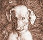
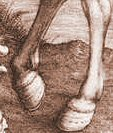

|
DER HEILIGE EUSTACHIUS (1501)
Kupferstich, 35 x 26 cm
Der Brukenthal Palast, Sibiu (Rumänien)
∆
Kommentar
Das Einritzen von Zeichnungen in
Metallplatten entwickelt sich zunächst in Deutschland und gegen Mitte des 15. Jahrhunderts auch in Italien. Der Kupferstich kombiniert zwei bereits bekannte Techniken: den Prägestempel, der aus einem geschnittenen Holzblock hergestellt wird, und die dekorative Ziselierung von Silber. Durch die Vebesserung des hadernhaltigen Papiers wird die Kupferstichtechnik vereinfacht. Aufgrund seiner Ausbildung war es vor allen anderen Albrecht Dürer, der die Kunst des Kupferstechens revolutionieren und perfektionieren konnte. Der heilige Eustachius ist allein von einem technischen Standpunkt aus betrachtet ein Meisterwerk. Niemand hatte dem Künstler die feine Abstufung von Licht und Schatten oder die Kontraste von Materialien, man kann sogar sagen, von Farben gezeigt.
∆
Einzelheiten
  Die Geschichte des Heiligen Eustachius, der
sich zum Katholizismus konvertiert hat, nachdem ihm bei der Jagd ein
Hirsch erschienen war, der zwischen seinen Geweihstangen ein Kreuz
trug, war vielerorts bekannt und verlangte nach einem natürlichen
Dekor. Die von Dürer dargestellte Landschaft lässt die
außergewöhnliche Beobachtungsgabe des Künstlers sowie seine manuelle
Virtuosität bei der naturgetreuen Darstellung von Pflanzen und
Tieren erkennen: der aufmerksame Blick der Hunde, das widerstrebende
Pferd, das mit seinem Huf auf die Erde stampft, die vereinzelten
Grasbüschel, ein vom Wind seltsam verdrehter Baumstamm bis hin zu
den Vögeln (der Formation des Schwarms zufolge handelt es sich um
Stare), die den Bergfried umkreisen. Dürer zeigt eine besondere
Vorliebe für eine außerordentliche Detailgenauigkeit, die wie auf
dem Kupferstich des Heiligen Eustachius die Gegenwart Gottes in der Schönheit der Natur und damit die universelle Bedeutung der wundersamen Erscheinung des Heiligen ausdrücken soll.
∆
Links
Website des Brukenthal Palastes in Sibiu:
http://www.brukenthalmuseum.ro/de/palat.php
∆
|